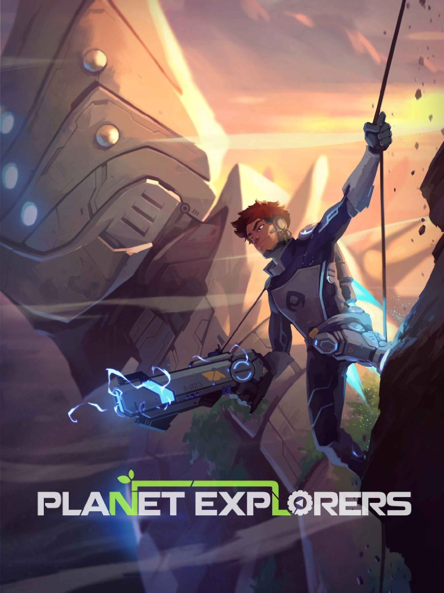

Planet Explorers
Planet Explorers
Details
|  | |
| Playtime | Not Played |
| Last Activity | Never |
| Added | 20/04/2020 |
| Modified | Never |
| Completion Status | Not Played |
| Source | Steam |
| Platform | PC |
| Release Date | 08/11/2016 |
| Community Score | 62 |
| Critic Score | |
| User Score | |
| Genre |
Action Adventure Indie RPG Simulation |
| Developer |
Pathea Games |
| Publisher |
Pathea Games |
| Feature |
Nexus Mods Partial Controller Support Single Player Trading Cards Workshop |
| Links |
Nexus Mods PCGamingWiki Community Hub Discussions Guides Workshop Store Page News |
Description
In Planet Explorers, it is the year 2287, one of the first colony
ships sent out by Earth arrives at the planet Maria, in the Epsilon
Indi Star System. During its landing sequence, something appears in
front of the massive ship that causes it to lose control and crash
into the planet. Some of the colonists survive in lifeboats, but what
they find is an unforgiving land filled with creatures ready to
outlast the visitors from Earth. Now the survivors must explorer,
gather, build, create, fight, and ultimately, build a new home.
Planet Explorers right now only features single player.
In single player there are 3 distinct selections
Current
Game Modes
Planet Explorers right now only features single player.
In single player there are 3 distinct selections
-
Story Mode – Story mode is the main meat and
bones of the game, it is the action-adventure-rpg-somewhat-4X
segment, offering npcs, missions, colony building, farming,
training, diplomacy, and of course, a storyline that you can
follow or ignore. This story features a 17X8km world map with many
unique character, landscapes, biomes, locations, and over 140
types of potential enemies. Even though we’ve made it seem like a
very action oriented game in the trailers, in reality, players can
choose to not fight so much as to just plant a farm, make some
food, keep the colonists alive, negotiate with the sentient
aliens, and defend the perimeter from the local life forms. That
can still eventually arrive at the ending. And yes, there is an
ending. Story mode also features coop with other players.
-
Adventure Mode – This mode is based on a
procedural map generated from a seed. It comes in a 40X40
kilometer map. Players will be able to complete random missions,
defeat bosses, dive through dungeons, and explore different
landscapes. This mode also features survival and versus.
- Build Mode – In this mode, there are no enemies and an infinite amount of building material. It also currently comes in a 40X40km map. Players will be able to build whatever they want in this mode, including everything in the Creations Editor. Think of this as the perfect testing ground to test everything you build. Or…it’s your place to build your garden without ever worrying about the pesky aliens.
Game Features
Current
- 30+ hours of storyline
- 140+ types of enemies
- 40+ unique mainline NPCs
- Able to dig
- Able to build
- Able to plant farm
- Able to build colony
- Able to have followers
-
Creation Editor to create vehicles, weapons, objects, vtols,
boats, armor, and more
- Day/night cycle with realistic moon cycles
- Weather system
- 15+ types of mineral types
- 200+ unique items
- Resource scanner
- Realtime AI pathfinding
- Realtime water physics
- Multiple boss types
- Story Editor
- AI robot follower
- Negotiation with aliens
- War with aliens